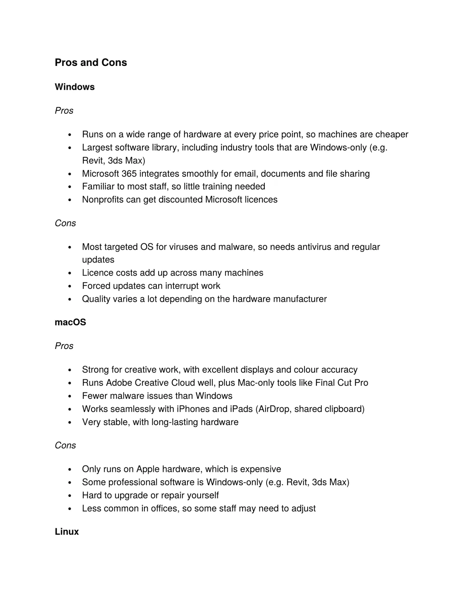
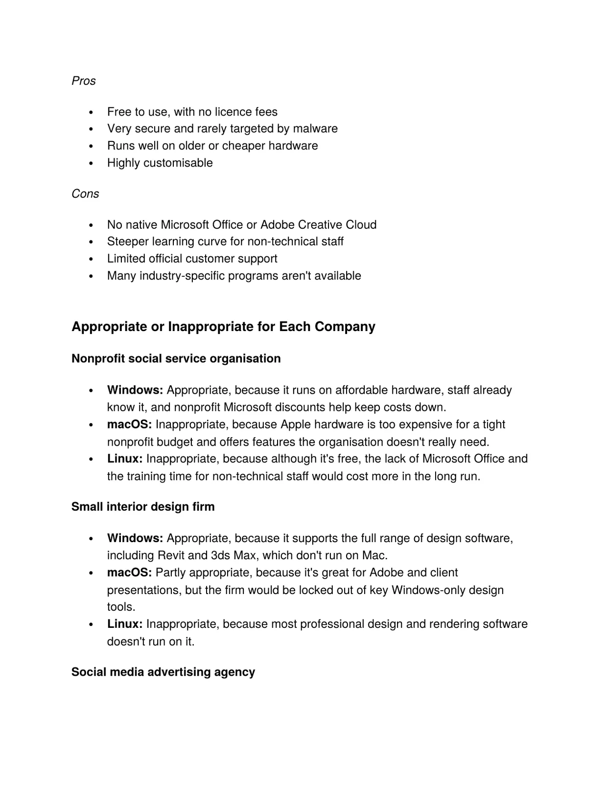
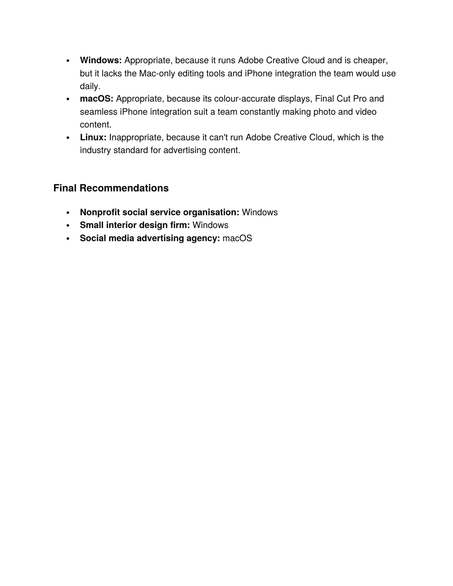

L05 Choosing the best operating system
The task
Acting as a technology consultant, compare Windows, macOS and Linux and recommend one for each of three start-ups: a nonprofit social service organisation, a small interior design firm and a social media advertising agency.
What I made
A pros and cons list for each operating system, a one-sentence verdict for every pairing, and a final recommendation for each client.
| Client | Operating system |
|---|---|
| Nonprofit social service organisation | Windows |
| Small interior design firm | Windows |
| Social media advertising agency | macOS |
Software decided the design firm: Revit and 3ds Max only run on Windows. For the nonprofit it was cost, with cheaper hardware, discounted Microsoft licences and staff who already know Windows.

See the other 2 pages




Download the original (PDF, 3 pages, 50 KB)
Reflection
The interior design firm was the hardest call. macOS suits creative work, so I expected to recommend it, but Revit and 3ds Max only run on Windows, and that settled it.
It felt a lot like advisory work in finance: you start from the client's constraints and budget, not the product you happen to like. The nonprofit was similar. Windows won on cost and on staff already knowing it, not on being the best system in the abstract.